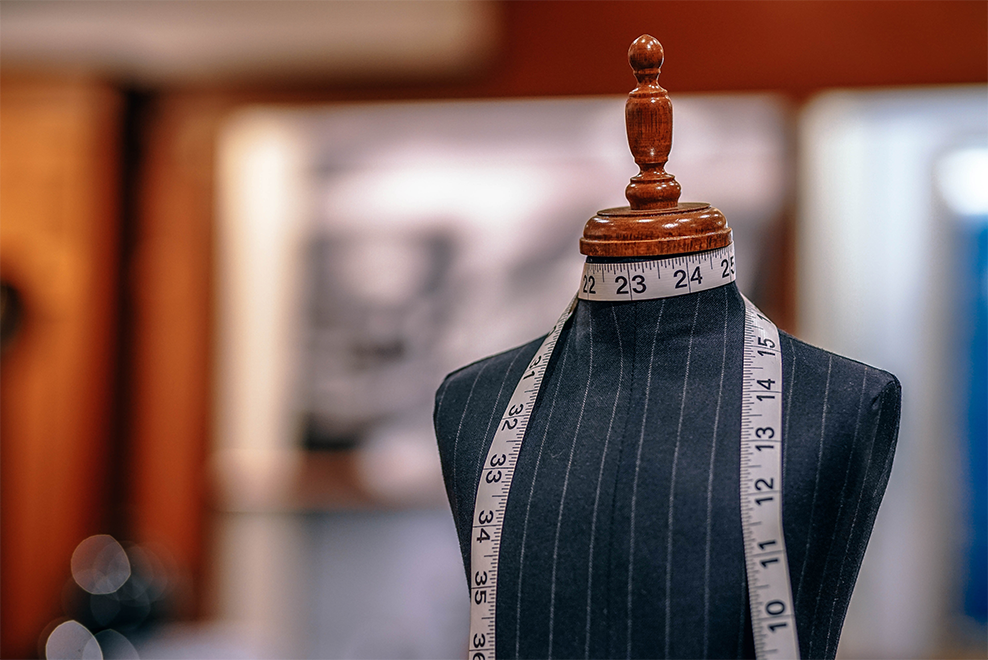

设计与开发

在Christopher Bailey即将离任的消息确认之后，Burberry首席执行官Marco Gobbetti曾宣布品牌将进行全面改革，主要目标是将品牌定位重新瞄准高端消费者。据Fashionunited报道，在信任首席执行官上任以来，巴克莱银行分析师Julian Easthope预计公司第三季度同比销售额将增长3%，这也是该公司连续第六个季度录得正增长，其中，Burberry的销量也受到了圣诞礼品市场的提振。
回到11月，Gobbetti针对公司的发展策略进行了革新，在更加明确品牌定位的基础上，Burberry将大幅度削减门店数量，尤其是那些影响到批发业务的门店，除此之外，Burberry也将放弃部分表现不佳的商场“店中店”，并关闭那些不靠近高端消费者社区的门店。
在这方面，《金融时报》援引Gargreaves Lansdown股票分析师Nicholas Hyett表示，Burberry目前进展良好，也预计会出现强劲的盈利势头，并真正掌控品牌命运走向，当然，计划还处在早期阶段。Hyett也对市场现状进行了警告，“品牌权威性将受到销售数字影响。”尽管分析师对于Burberry的潜力持积极肯定态度，但是品牌短期内仍然在面临更高资本要求和和更低销售数字的冲突影响。新闻发布当天，Burberry股价应声下跌10%。新品牌战略的顺利执行将是Burberry在新一年的首要任务，同样也是股价的潜在推动力。